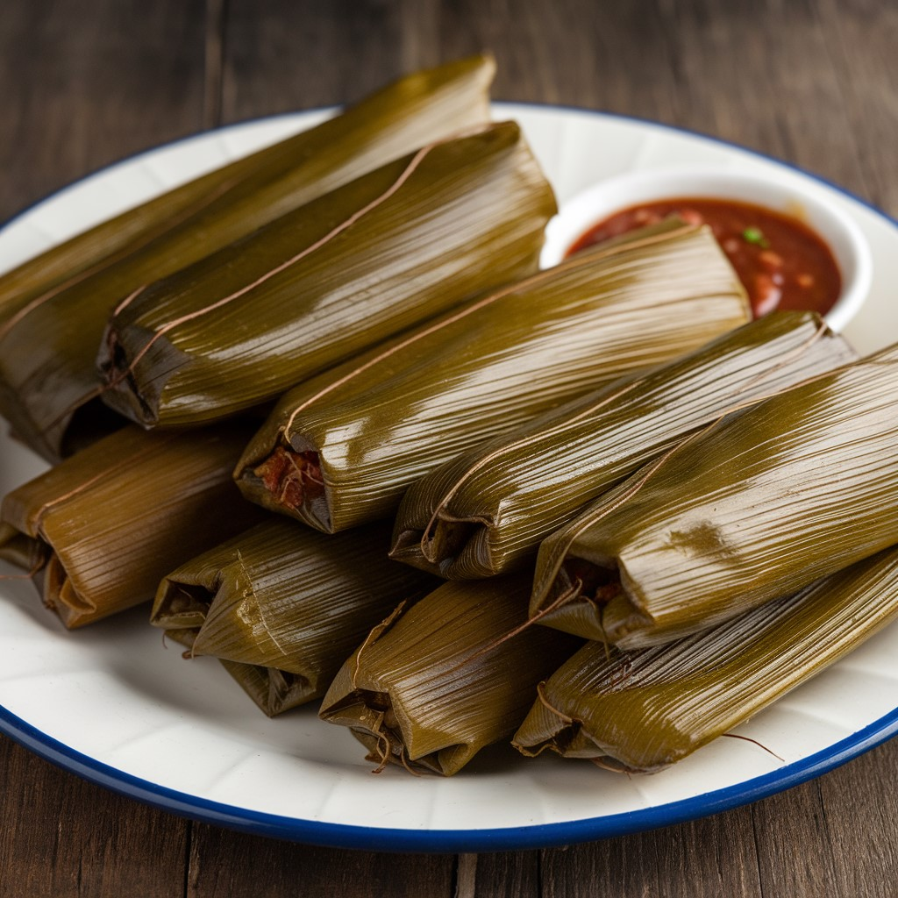
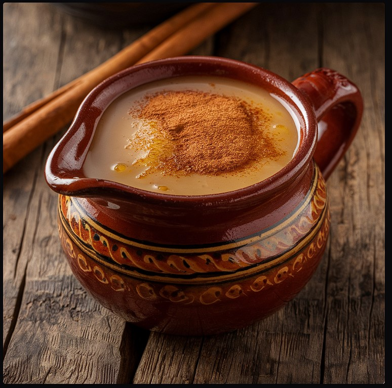
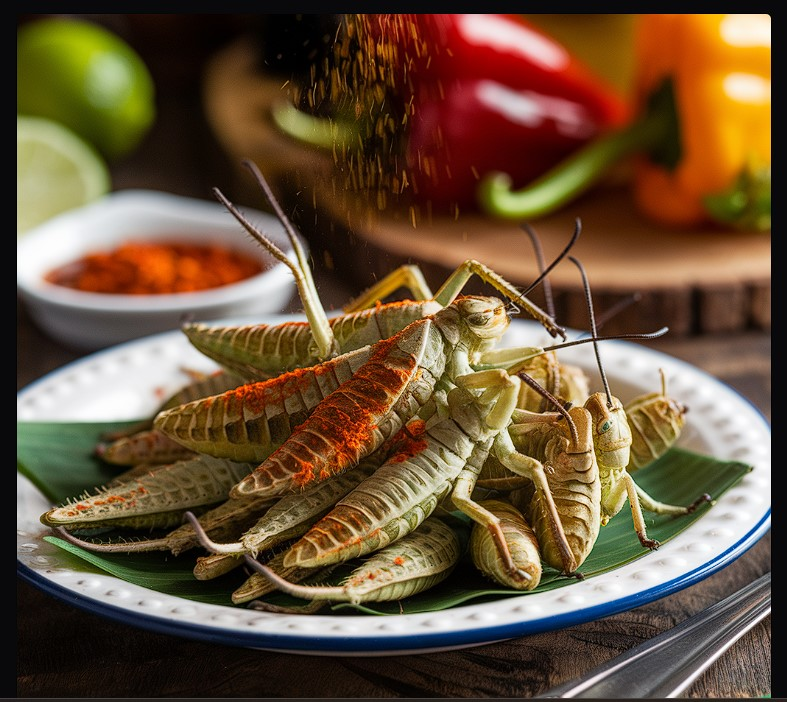
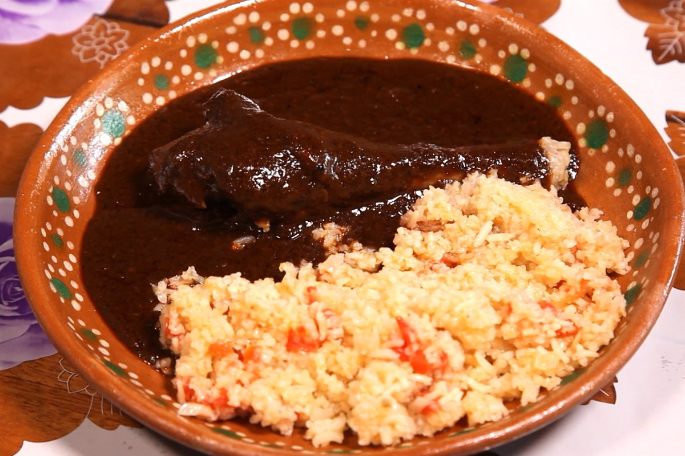

La comida prehispánica mexicana es fundamental no solo para la cultura, sino también para la identidad gastronómica del país. Ingredientes como el maíz, el cacao, los chiles y el amaranto han sido esenciales en la dieta de los pueblos originarios, y sus recetas han sido transmitidas de generación en generación.
Algunos de los ingredientes más representativos de la cocina prehispánica son:
Aquí te presentamos algunas recetas tradicionales prehispánicas:
Los tamales son uno de los platillos más antiguos, hechos a base de maíz relleno de carnes, salsas o verduras, envueltos en hojas de maíz o plátano y cocidos al vapor.
El atole es una bebida espesa hecha con masa de maíz disuelta en agua o leche, endulzada con piloncillo y a veces saborizada con cacao, canela o vainilla.
Los chapulines (saltamontes) se consumen desde tiempos prehispánicos. Se tuestan con ajo, limón y chile, y se sirven en tacos con tortillas de maíz.
El mole es una salsa espesa a base de chiles, especias, cacao, y otros ingredientes, acompañada generalmente con pollo o guajolote. Su origen se remonta a la época prehispánica, aunque ha evolucionado con el tiempo.
Aquí te presentamos a dos de los cocineros más destacados de la comida prehispánica mexicana:
Si tienes preguntas o comentarios, no dudes en escribirnos a: contacto@comidamexprehis.mx